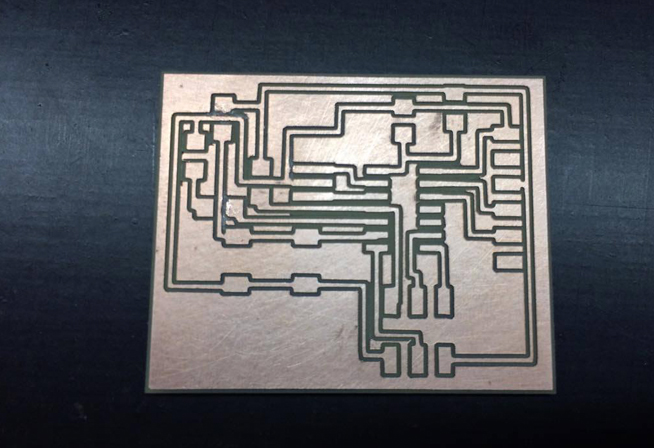

Electronics Design
3D Printing
I choose to make draw my PCB thconfusoe EAGLE software. I redraw the PCB echo hello-world board and add a button and LED. First i create a new schematic and start to put the components. To add the components click in add our type add. I use the Librarie fab.lib from FAB ACADEMY.
{kind=link}
To add the VCC and GND i make with same method.
After add my components i connect my components using NET. This method is simple but if they have many components is confused because we have saw much many nets.

And to connect the components exist other method with less confusion. In this method you need to give the name to your pad component in my case i give the name MISO because e need connect the ISP pin to the pad 7 (MOSI) of attiny44.
After you give the name to first pad you need give the same name to the other pad and pop ups this window to connect the two pads.
I put the label to know where the pads are connected.
And after the connect all components this is my final result schematic.
The schematic it's over is the to start make the board. To go this windows need to click in schematic GENERATE/switch to board.
The first step i make is to go the Net classes and the settings .
In this step i move the components to the board in strategic site to be easier to connect the components. To connect the components we have two options, make the route manually our make the autorouter. I choose make manually route.
In this images i simulate a autorouter but the result is not very good.
You can see the autorouter don't connect all components.
This is my result of manually route.
After i draw my board i passed to the cnc i export one image of the board in eagle and convert svg. I put the svg in CARVEY CNC and this is result.
I decided to make one outline because more outline implies more time. And in this case i make one outline so i had to test all contacts with the voltmeter.